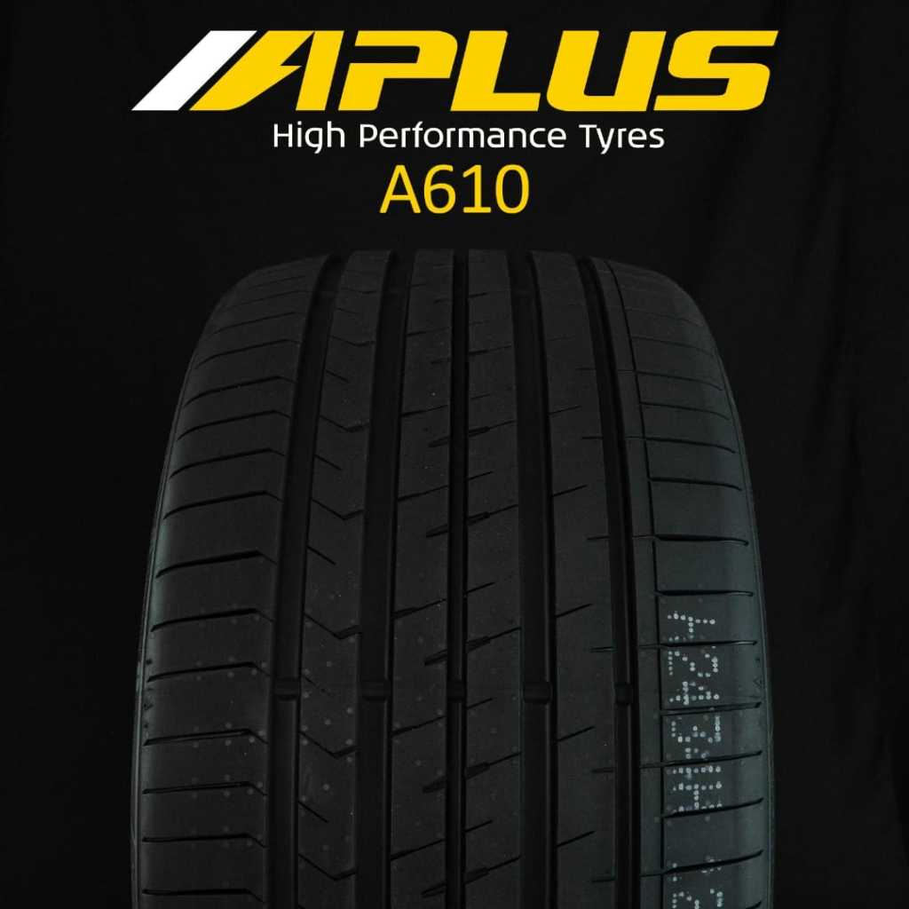

Aplus A610 235/50R18

RM 189.00
APLUS A610 – 235/50R18 101W XL. A budget-friendly high-performance summer tyre designed for passenger cars, offering practical everyday driving performance on wet and dry roads. Its tread pattern is designed to support road handling, water drainage and ride comfort. The Extra Load (XL) construction provides increased load-carrying capacity. Tyre Size: 235/50R18 Load Index: 101 (825 kg) Speed Rating: W (270 km/h) Load Version: XL (Extra Load) Type: High Performance / Summer Tyre Fuel Efficiency: C (EU Label) Wet Grip: C (EU Label) External Noise: 71 dB (EU Label) Tread Depth: 7.8 mm Run Flat: No
Klang Hock Li Tyre Services Sdn Bhd, Klang, Selangor, Malaysia.
View live product details and enquire